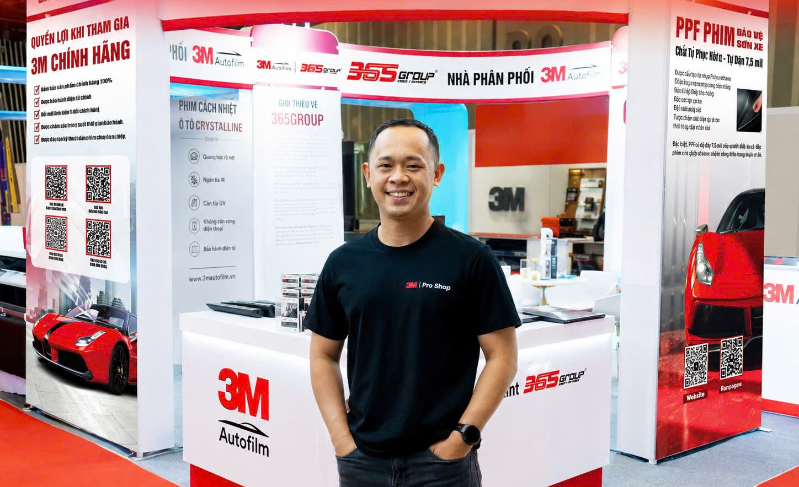
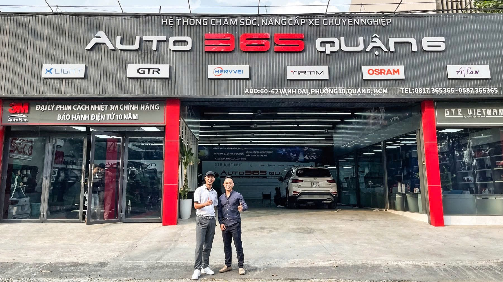
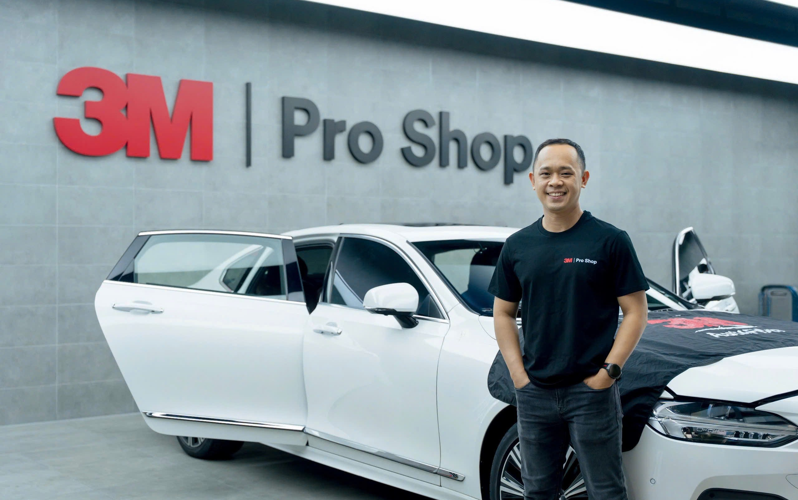
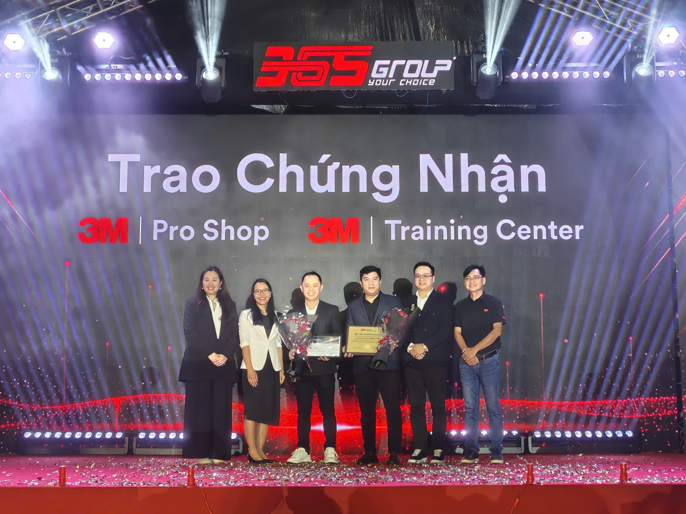
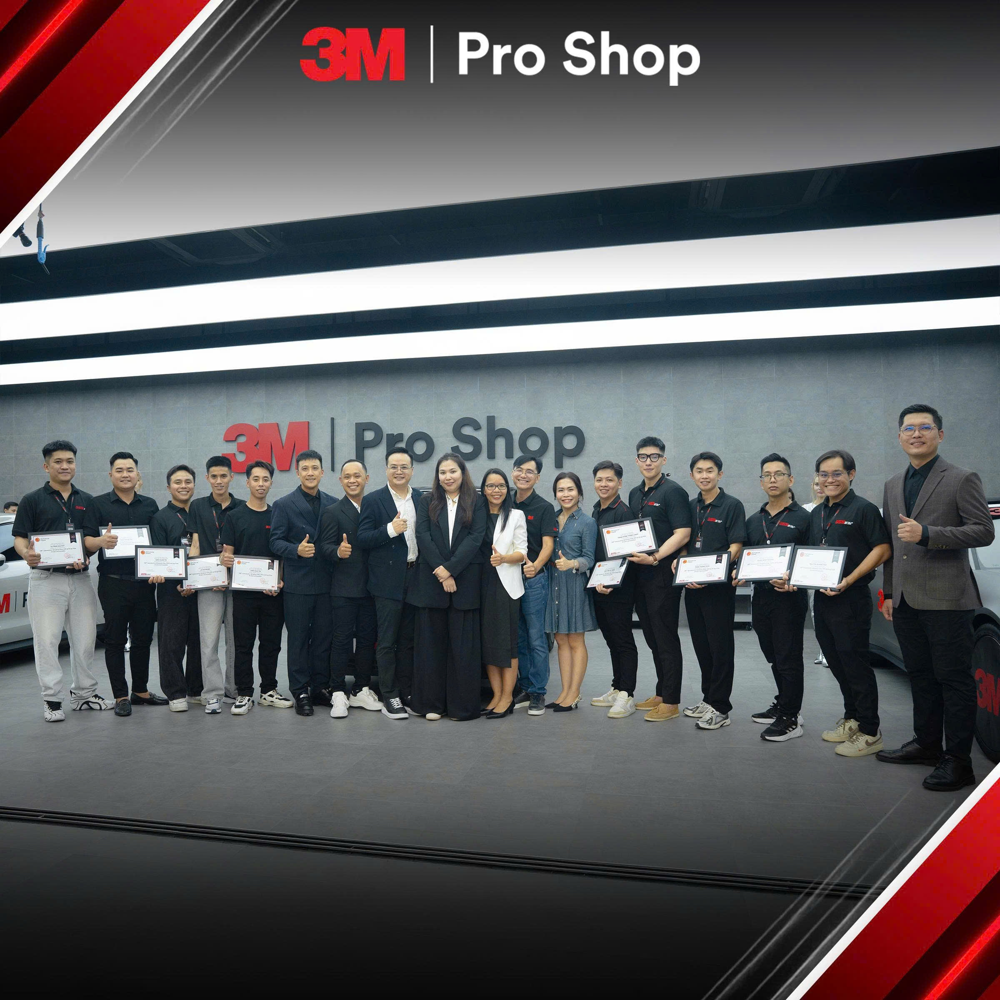

Đặng Minh Hoàng hiện là Giám đốc điều hành 3M Pro Shop – Training Center, phụ trách tiêu chuẩn tư vấn, đào tạo kỹ thuật, kiểm soát chất lượng thi công và phát triển nội dung chuyên môn về phim cách nhiệt, PPF và các giải pháp bảo vệ xe tại hệ thống Auto365.
Sinh năm 1988 tại Phú Yên, anh chọn cách xây dựng giá trị bằng sự kiên trì, trách nhiệm và khả năng giải quyết vấn đề thực tế. Trong công việc, anh điềm tĩnh khi giao tiếp nhưng quyết đoán khi cần xử lý — hiểu đúng vấn đề trước, rồi mới đưa ra giải pháp phù hợp cho đội ngũ và khách hàng.
“Lắng nghe để thấu hiểu, hành động để giải quyết.”
Hành trình của anh Hoàng được xây dựng qua từng giai đoạn thực chiến: từ kinh doanh, điều hành chi nhánh đến quản lý 3M Pro Shop – Training Center.
Anh Hoàng làm việc tại Auto365 trụ sở chính với vai trò Giám đốc kinh doanh tại Số 4/4/1/7 Đường số 3, Phường Hiệp Bình Phước, Thành phố Thủ Đức, Thành phố Hồ Chí Minh.
Đây là giai đoạn anh xây dựng nền tảng chuyên môn trong ngành phụ kiện ô tô, phim cách nhiệt và PPF, đồng thời tiếp xúc trực tiếp với nhu cầu thực tế của khách hàng.
Giá trị chuyên môn tích lũy: hiểu cách chọn mã phim cách nhiệt theo từng vị trí kính (kính lái, kính sườn, kính lưng), thói quen sử dụng xe tại Việt Nam, ngân sách và kỳ vọng bảo hành của chủ xe.

Từ tháng 11/2020, anh Hoàng đảm nhiệm vai trò Giám đốc điều hành Auto365 Quận 6 tại 62 Vành Đai, Khu V, Bình Phú, Thành phố Hồ Chí Minh, phụ trách vận hành chi nhánh, quản lý đội ngũ, kiểm soát chất lượng dịch vụ và nâng cao trải nghiệm khách hàng.
Đây là giai đoạn thể hiện rõ cách làm việc của anh: điềm tĩnh nhưng quyết liệt trong xử lý vấn đề và luôn hướng đến kết quả thực tế.
Giá trị chuyên môn tích lũy: làm chủ quy trình tiếp nhận – thi công – nghiệm thu khép kín, kiểm soát khu vực thi công theo hướng sạch sẽ, hạn chế bụi, ổn định quy trình thao tác và xử lý các lỗi phát sinh sau khi dán.

Đến năm 2026, anh Hoàng đảm nhiệm vai trò Giám đốc điều hành 3M Pro Shop – Training Center tại Số 4/4/3/3 Đường số 3, Khu phố 31, Phường Hiệp Bình, Thành phố Thủ Đức, Thành phố Hồ Chí Minh, tập trung vào chuẩn hóa tư vấn, quy trình thi công, đào tạo và nâng cao tiêu chuẩn dịch vụ phim cách nhiệt, PPF chính hãng 3M.
Đây là dấu mốc kết nối ba yếu tố: chuyên môn sản phẩm, kỹ thuật thi công và trải nghiệm thực tế của khách hàng.
Giá trị chuyên môn hiện tại: định hướng nội dung chuyên môn, kiểm soát chất lượng thi công và tăng tính minh bạch trong quá trình tư vấn, thi công và kích hoạt bảo hành điện tử chính hãng cho khách hàng.

Chuyên môn của anh Hoàng trong lĩnh vực phim cách nhiệt và PPF ô tô được hình thành qua quá trình trực tiếp tư vấn khách hàng, quản lý đội ngũ thi công, xử lý phản hồi thực tế và điều hành dịch vụ tại hệ thống Auto365.
Với anh, phim cách nhiệt và PPF không đơn thuần là sản phẩm bảo vệ xe, mà là một phần trong trải nghiệm sử dụng xe. Vì vậy mỗi phương án tư vấn cần cân nhắc trên nhu cầu thật, tình trạng xe, thói quen sử dụng và kỳ vọng lâu dài của chủ xe — chú trọng sự rõ ràng trong tư vấn, sự chuẩn mực trong thi công và sự minh bạch trong bảo hành.
Chuyên môn của anh Hoàng được chứng minh bằng quá trình vận hành thực tế, không phải bằng lời tự giới thiệu:

Với anh, một đơn vị thi công chuyên nghiệp cần đội ngũ hiểu đúng sản phẩm, làm đúng quy trình và đặt trải nghiệm khách hàng làm trọng tâm. Đây là lý do trong vai trò điều hành 3M Pro Shop – Training Center, anh tập trung chuẩn hóa tư vấn, nâng cao tay nghề kỹ thuật và xây dựng môi trường dịch vụ rõ ràng cho khách chọn phim cách nhiệt và PPF chính hãng.
Một sản phẩm tốt nếu tư vấn chưa phù hợp hoặc thi công chưa chuẩn vẫn có thể khiến khách hàng chưa hài lòng. Ngược lại, khi sản phẩm phù hợp, quy trình rõ ràng và kỹ thuật đạt chuẩn, khách hàng cảm nhận được giá trị thực tế trong suốt quá trình sử dụng xe. Trong vai trò điều hành, anh Hoàng tập trung vào:

Phạm vi này nêu rõ chuyên môn của anh Hoàng đến đâu và anh kiểm duyệt nhóm nội dung nào — giúp khách hàng và công cụ tìm kiếm hiểu đúng giới hạn năng lực.
| Phim cách nhiệt ô tô | Tư vấn chọn mã phim theo vị trí kính, nhu cầu chống nóng, độ sáng, độ riêng tư và trải nghiệm lái xe. |
|---|---|
| Phim cách nhiệt 3M | Định hướng nội dung về tất cả các dòng phim 3M chính hãng (bao gồm 3M Crystalline, 3M Ceramic IR, 3M Ceramic NR / Ceramic Hybrid, và 3M Crystalline CR BLK), quy trình tư vấn, thi công và bảo hành chính hãng. |
| PPF ô tô | Tư vấn giải pháp bảo vệ sơn xe, vị trí nên dán PPF, quy trình thi công và chăm sóc sau dán. |
| Quy trình thi công | Kiểm soát tiêu chuẩn tư vấn, tiếp nhận xe, thi công, nghiệm thu và bàn giao cho khách hàng. |
| Đào tạo đội ngũ | Định hướng kiến thức sản phẩm, kỹ năng tư vấn và tiêu chuẩn dịch vụ cho đội ngũ Auto365. |
Đặng Minh Hoàng là Giám đốc điều hành 3M Pro Shop – Training Center, có 10 năm kinh nghiệm (từ năm 2016) trong tư vấn, quản lý quy trình thi công và vận hành dịch vụ phim cách nhiệt, PPF ô tô tại hệ thống Auto365.
Anh phụ trách và định hướng nội dung về phim cách nhiệt ô tô (đặc biệt dòng 3M Ceramic NR), PPF bảo vệ sơn xe, quy trình tư vấn – thi công – nghiệm thu và chế độ bảo hành chính hãng.
Từ năm 2026, anh là Giám đốc điều hành 3M Pro Shop – Training Center, tập trung chuẩn hóa tư vấn, kiểm soát chất lượng thi công và đào tạo đội ngũ kỹ thuật.
Vì anh có kinh nghiệm trực tiếp tư vấn khách hàng, điều hành chi nhánh Auto365 Quận 6 giai đoạn 2020–2025, quản lý đội thi công và tham gia các chương trình đào tạo sản phẩm của 3M.
3M Pro Shop – Training Center nằm tại Số 4/4/3/3 Đường số 3, Khu phố 31, Phường Hiệp Bình, Thành phố Thủ Đức, Thành phố Hồ Chí Minh. 3M Pro Shop và Auto365 thuộc hệ sinh thái 365Group.